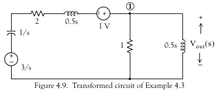
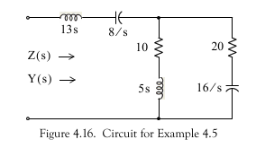

Lab 3: Laplace transforms and transfer functions for circuit analysis
Contents
Lab 3: Laplace transforms and transfer functions for circuit analysis#
Preamble#
Associated Class Notes#
This lab supports the materials covered in Chapter 3.3 and Chapter 3.4 of the course notes. You may wish to refer to the Worksheets worksheet 6 and worksheet 7 for additional examples to try.
Other formats#
This document is available in HTML format for online viewing PDF for printing.
Acknowledgements#
These examples have been adapted from Chapter 4 of Karris[Karris, 2012].
Aims#
The purpose of this laboratory is to explore the use of MATLAB for circuit analysis and Simulink for circuit modelling using transfer functions.
It also encourages you to make full use of the documentation features afforded by the Live Script format.
Assessment criteria#
Marks can be claimed according to how many of the parts of Lab Exercises 4 to 6 and Mini-project 2 and have been completed.
Your peer assessor is encouraged to give feedback on the quality of the Live Script documentation you include in your submissions.
Detailed marking criteria for this and the other labs and the project are given in the linked Assessment Criteria [Google sheet].
Setup#
Before you start#
If you haven’t already, create a suitable folder structure on your file-store for your labs.
I suggest
OneDrive\workspace
signals-and-systems-lab
lab01
lab02
lab03
:
Use folder OneDrive\workspace\signals-and-systems-lab\lab03 for this lab.
Tutorial: Defining Transfer Functions in MATLAB (not assessed)#
The linked m-File is a short tutorial introduction to the definition of transfer functions in MATLAB. It introduces the Linear Time Invariant (LTI) block and shows how it can be used in analysis. Download, open as a Live Script file, run all the code and read the file. Save and use the Live Script file as a reference for later labs.
Linked m-file: tf_matlab.m.
Lab Exercises#
As an experiment in course development for this laboratory you have the option to complete Lab Exercises 4, 5 and 6 uing the instructions below or by guided assessment using MATLAB Grader.
In all these exercises you should add sections, headings and explanatory text to document your Live Script files so and help your peer assessor understand your solutions.
Lab Exercise 4#
Download the linked script file solution3.m for the Solution for Example 3 from Week 3. Open it as a Live Script file and run all the code. Study the file which presents part of the solution to Textbook Example 4.3.
Step 1#
Save the Live Script file then save it as ex4.mlx.
At the line that which says
% ADD NEW CODE HERE (1)
We want you to add code that completes the derivation of the transfer function.
So, starting from the simplified circuit (Fig. 4.9 from Karris[Karris, 2012]: p4-5):

Add explanatory text and MATLAB commands to do the following:
Define equation 4.5 in MATLAB:
eq45 = (Vout - 1 - 3/s)/(1/s + 2 + s/2) + Vout/1 + Vout/(s/2) == 0
Now use Vout = solve(eq45,Vout) function to confirm Equation 4.6
Step 2#
The provided code uses roots to find the factors of the denominator
and expands the terms with complex roots to find the quadratic factor.
Step 3#
Use the inverse Laplace Transform on the rational polynomial with real and quadratic factors to determine the symbolic expression vout as a function of time.
Step 4#
Verify that the response is
Use fplot to plot this result.
Step 5#
Compare your answer with the numerical solution computed in the script at section Plot the result.
Save your solution ex4.mlx for upload to Canvas.
Alternatively, take the code you developed and paste it into Exercise 4 of Lab 3 in the MATLAB Grader for parts 4.1 to 4.4 and instant grading and feedback.
Lab Exercise 5: Problem Solving in MATLAB#
Choose one of the Problems Q1-Q3 from Section 4.7 of [Karris, 2012] (page 4-21) and use MATLAB to adapt the methods used to solve the problem in Lab Exercise 4 to determine the required solution.
Save your chosen solution as a Live Script file with the name ex5.mlx for upload to Canvas.
Lab Exercise 6: Complex Impedance and Admittance#
The linked file solves Example 4.5 from Karris 2012 (Example 5 in the notes). The solution concerns the calculation of the Complex Impedance and Admittance of the Circuit shown in Figure 4.16.
Linked file: solution5.m.

Download the file into MATLAB, open it as a Live Script file and use it to verify the equation for the circuit impedance \(Z(s)\) given in the notes and the text. Extend it to calculate the admittance \(Y(s)\).
Use the same technique to solve Q4 from Section 4.7 (Exercises) of Karris (p. 4-21).
Save your solution to a Live Script file with the name ex6.mlx for upload to Canvas.
Mini Project 2: Transfer Functions#
Download the linked MATLAB script which computes the solution to Example 4.7 from [Karris, 2012] (Example 7 from the notes). This script computes the transfer function of the Op-Amp circuit shown below:

Linked script file: solution7.m.
In the original example:
R1 = 20 kOhm
R2 = 40 kOhm
R3 = 50 kOhm
C1 = 25 nF
C2 = 10 nF
Use your student number to give a different set of component values whiles maintaining the relative sizes.
For example if your number was 876543 you might use:
R1 = 80 kOhm
R2 = 70 kOhm
R3 = 60 kOhm
C1 = 54 nF
C2 = 30 nF
If your student number contains 0s, you should substitute a digit if your choice.
You may find doc or help and the symbolic toolbox function sym2poly useful.
To Do: open solution7.m as a Live Script file and save as proj2.mlx. Adapt the script to repeat the computation using component values based on your student number.
Then add text and instructions to:
compute and plot the phase response of Gs - see function
anglemake a transfer function LTI object
Gs2 = tf(numG,denG)Compare frequency response with result of
bode(Gs2)Plot the pole-zero map of
Gs2using thepzmapfunction.Plot the step response of
Gs2using thestepfunction.Compute and plot the response of
Gs2to a sinusoid using thelsimfunction.Repeat the simulation of the sinsoidal response in Simulink - save model as
proj2.slx.
Submit the files proj2.mlx and proj2.slx to Canvas.
What to hand in#
Claim#
Up to 3 marks can be claimed for the mini project and up to 2 marks more depending on how much of Exercises 4-6 you have completed.
Make your claim by downloading and editing the labwork claim form and declaration: lab03-claim.docx [Word].
Submission#
You should submit the following to the Lab 03: Laplace transforms and transfer functions for circuit analysis Assignment on Canvas.
The completed labwork claim form and declaration.
As evidence for completion of the mini-project you should submit your completed versions of the Live Script file and Simulink files
proj2.mlxandproj2.slx.As evidence for completion of lab exercises 4 and 5, you should submit your completed versions of the Live Script files
ex4.mlxandex5.mlx.As evidence for completion of lab exercise 6, you should submit your completed versions of the Live Script file
ex6.mlx.
Deadline#
The deadline for claims and submission is:
4:00pm, 8th March 2022.
Peer assessment procedure for this lab#
On Monday 9th March, you should receive notification that the submission from one of your colleagues is available for peer assessment. This notification will arrive by email (if you have your Canvas notifications turned on) or via the inbox on Canvas or the Canvas Student App.
This is the procedure you should follow:
Carefully read the document on Peer Assessment (PDF) before starting your assessment.
Check that the files are downloaded and named correctly as per the note on Filenaming Conventions in the peer-assessment document.
Open the Live Script file
proj2.mlxand execute run all. Check that the results are all present and that there are no errors. Review the formatting of the file and think about how readable and understandable the script is as a record of the experiment.Open the Simulink model
proj2.slx. Review the transfer function block and confirm that it matches the values computed inproj2.mlx. Run the simulation and check the results.Review the live Script files
ex4.mlx,ex5.mlxandex6.mlxin the same way that you did forproj2.mlx. Comment on your findings.